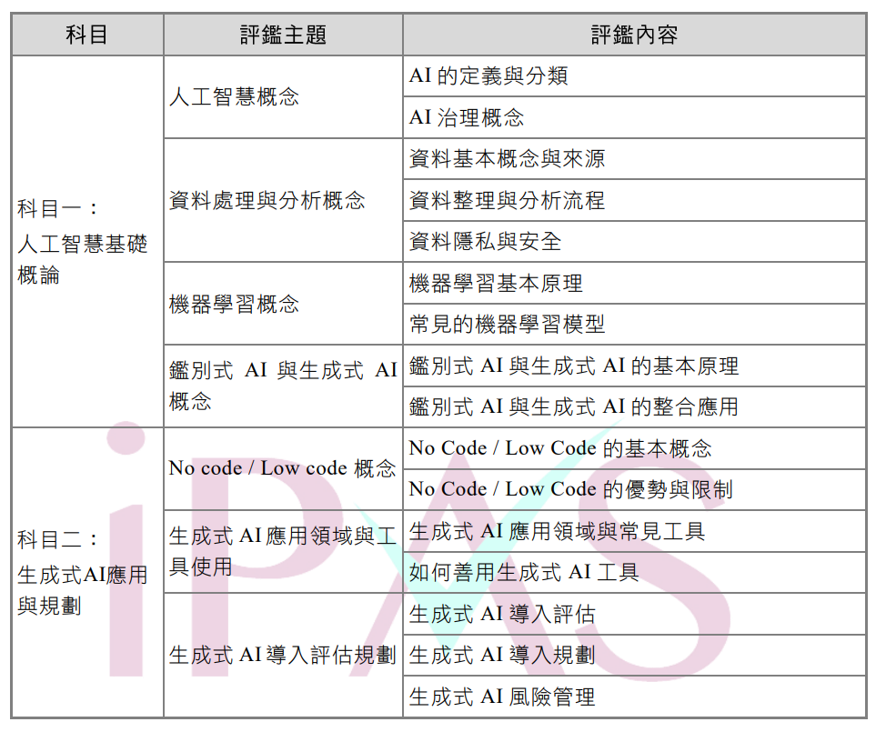
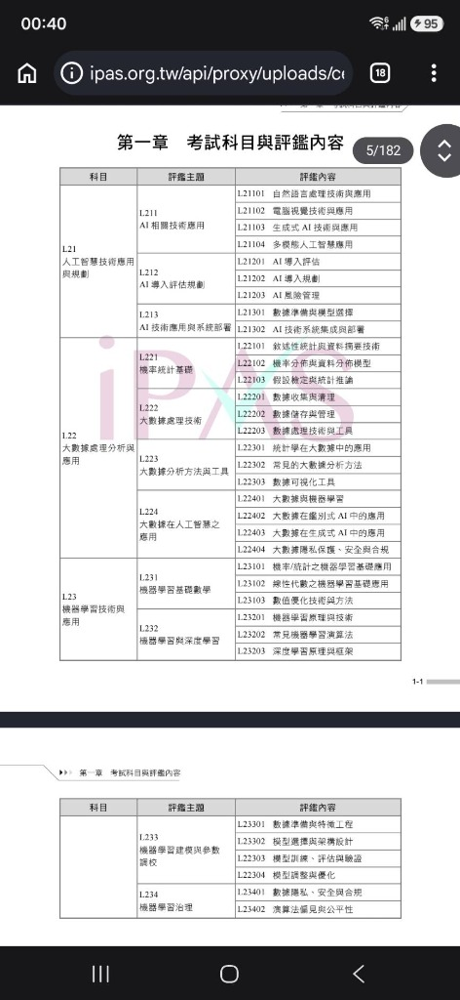

第一章 考試科目與評鑑內容
AI 應用規劃師能力鑑定規範對照表
本頁完整整理經濟部 iPAS「AI 應用規劃師」能力鑑定官方評鑑大綱表格（涵蓋初級兩大科目與中級三大科目）。 您可透過結構化表格清楚掌握每個評鑑主題的代碼、評鑑核心項目，並可放大檢視官方公告之標準試題規範原圖。
🎒 初級能力鑑定：考試科目與評鑑內容
共 2 大科目・8 大評鑑主題・16 項評鑑內容
| 科目 | 評鑑主題 | 評鑑內容 |
|---|---|---|
|
科目一： 人工智慧基礎概論 |
人工智慧概念 | AI 的定義與分類 |
| AI 治理概念 | ||
| 資料處理與分析概念 | 資料基本概念與來源 | |
| 資料整理與分析流程 | ||
| 資料隱私與安全 | ||
| 機器學習概念 | 機器學習基本原理 | |
| 常見的機器學習模型 | ||
| 鑑別式 AI 與生成式 AI 概念 | 鑑別式 AI 與生成式 AI 的基本原理 | |
|
科目二： 生成式 AI 應用與規劃 |
鑑別式 AI 與生成式 AI 概念 | 鑑別式 AI 與生成式 AI 的整合應用 |
| No code / Low code 概念 | No Code / Low Code 的基本概念 | |
| No Code / Low Code 的優勢與限制 | ||
| 生成式 AI 應用領域與工具使用 | 生成式 AI 應用領域與常見工具 | |
| 如何善用生成式 AI 工具 | ||
| 生成式 AI 導入評估規劃 | 生成式 AI 導入評估 | |
| 生成式 AI 導入規劃 | ||
| 生成式 AI 風險管理 |
🖼️ 初級官方評鑑大綱規範表格（原圖）
點擊圖片可放大檢視

🔍 點選圖片開啟高解析度放大檢視視窗
🎓 中級能力鑑定：考試科目與評鑑內容
共 3 大科目・9 大評鑑主題・26 項評鑑細部內容
| 科目 | 評鑑主題 | 評鑑內容 |
|---|---|---|
|
L21 人工智慧技術應用與規劃 |
L211 AI 相關技術應用 | L21101 自然語言處理技術與應用 |
| L21102 電腦視覺技術與應用 | ||
| L21103 生成式 AI 技術與應用 | ||
| L21104 多模態人工智慧應用 | ||
| L212 AI 導入評估規劃 | L21201 AI 導入評估 | |
| L21202 AI 導入規劃 | ||
| L21203 AI 風險管理 | ||
| L213 AI 技術應用與系統部署 | L21301 數據準備與模型選擇 | |
| L21302 AI 技術系統集成與部署 | ||
|
L22 大數據處理分析與應用 |
L221 機率統計基礎 | L22101 敘述性統計與資料摘要技術 |
| L22102 機率分佈與資料分佈模型 | ||
| L22103 假設檢定與統計推論 | ||
| L222 大數據處理技術 | L22201 數據收集與清理 | |
| L22202 數據儲存與管理 | ||
| L22203 數據處理技術與工具 | ||
| L223 大數據分析方法與工具 | L22301 統計學在大數據中的應用 | |
| L22302 常見的大數據分析方法 | ||
| L22303 數據可視化工具 | ||
| L224 大數據在人工智慧之應用 |
L22401 大數據與機器學習 L22402 大數據在鑑別式 AI 中的應用 L22403 大數據在生成式 AI 中的應用 L22404 大數據隱私保護、安全與合規 |
|
|
L23 機器學習技術與應用 |
L231 機器學習基礎數學 | L23101 機率/統計之機器學習基礎應用 |
| L23102 線性代數之機器學習基礎應用 | ||
| L23103 數值優化技術與方法 | ||
| L232 機器學習與深度學習 | L23201 機器學習原理與技術 | |
| L23202 常見機器學習演算法 | ||
| L23203 深度學習原理與框架 | ||
| L233 機器學習建模與參數調校 | L23301 數據準備與特徵工程 | |
| L23302 模型選擇與架構設計 | ||
| L23303 模型訓練、評估與驗證 | ||
| L23304 模型調整與優化 | ||
| L234 機器學習治理 | L23401 數據隱私、安全與合規 | |
| L23402 演算法偏見與公平性 |
🖼️ 中級官方評鑑大綱規範表格（原圖）
點擊圖片可放大檢視

🔍 點選圖片開啟高解析度放大檢視視窗